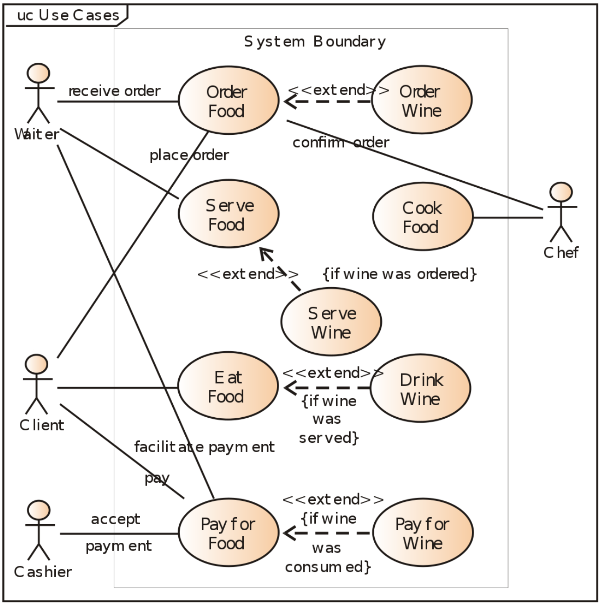
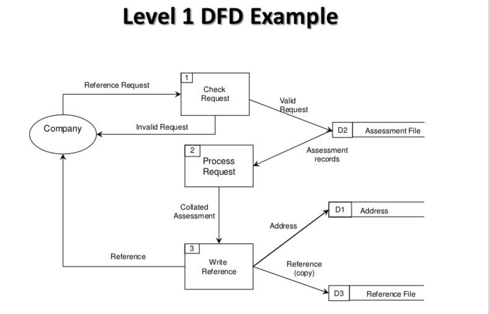
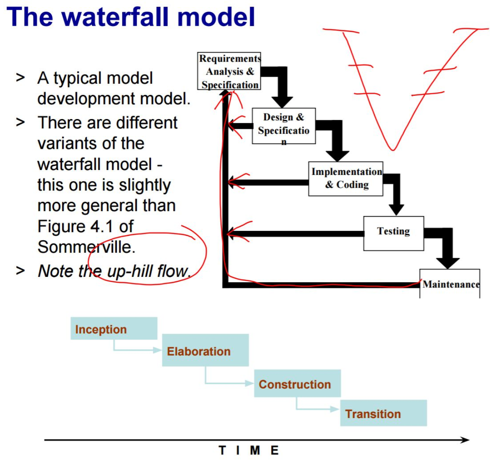

SRS - Software Requirement Specification
- Defines what the system must do
- Describes functionality of system
- identifies look and feel of system
Definitions
- System: Set of components acting together to perform a task
- Boundary Identifies what considered part of system, what considered external; provides location for system in big pic
- Ent/Obj Entities & Obj are elem in sys that can take state or value
- Activities actions resulting in change of state or value
- Use Case Sequence of actions a system perform that yields an observable result of value to a particular actor

- Actor an entity outside system that is involved in interacting with system
- Scenario A single path through use case
- Use Case Diagram Graphical representation showing the relationship between a set of use cases and the involved actors. Purpose structured approach to show requirements, capture functions and show user interaction for each goal
- Data Flow Diagram Graphical tool to show flow of data in a system. Used to show where data comes from, where it goes & what transformations happen to it in process.

- Software Quality is whether a product meets the specifications, as well as customers requirements achieved through testing including code review, unit testing, integration testing & end to end testing
System Architecture
- The Repository Model (adelaide metro)
- good at managing large data
- subsystems connected to a database
- The Client/Server Model
- access video, text, data
- networks/client/server (netflix)
- The Abstract Machine Model
- like an onion, deals with high level
- complex systems (spaceship).
Control Models
- Centralised Control: One subsystem has overall responsibility for control, stars / stops other components
- Call and Return Model
- Top down approach
- passes down permission from main routine
- Sequential systems
- Manager Model
- has a core system controller that reference system state variables.
- Polling sensors
- Event Based Control: Each subsystem responds to externally generated events
- Interrupt driven handler
- high performance hard to upgrade -hardware based - limited switches -complex to program and manage
- Broadcast model
- has a single stream of events
- subsystems don't know if events are handled- easy to upgrade
Requirements
- Functional: Relates to technical aspects of system - Create a new user, need username pass, returns id
- Non-Functional: Can be used to determine the success of system - System must respond to events in 5 seconds under no load
Constraints
- Implementation: Constraints that must be observed when implementing the system such as no downtime
- Design: Imposed by others, influence the design - software must run on centos
Maintenance
- Maintenance is any work done after the system is operational
- Corrective fix any newly discovered bugs
- Preventative is to improve the system for future maintainability and reliability
- Adaptive Changes in the environment of a software system (e.g., hardware or operating system upgrades) will necessitate changes in the system; the software will have to be modified so that it continues to function in the new environment.
- Perfective As a software system is used, the users suggest new capabilities and other changes to improve the system
- Side Effects
- Documentation - changes when source code is updated but relevant docs are not
- Coding - when source code is updated but not all references to a particular function have been checked
- Data - modify individual elements of data structures / alter the structure in a way that is no longer compatible with the software the system is using
- Improve by improving code quality through code review, ensuring features are well documented
Testing
- Validation is checking that the requirements define the system that the consumer wants
- Verification is checking that requirement statements are accurate, complete and unambiguous
- White-box Testing
- General Purpose Examines a method of testing software that tests the inner workings of a function
- Black-box Testing
- General Purpose Examines the functionality of an application without peering into its internals structures or workings.
- Stages Can be broken down into three many stages
- Unit Testing to test each individual module does what the designer intended
- Integration Testing to test the interface between each module is as intended
- System Testing to make sure the system does what the customer intended
Life Cycle
